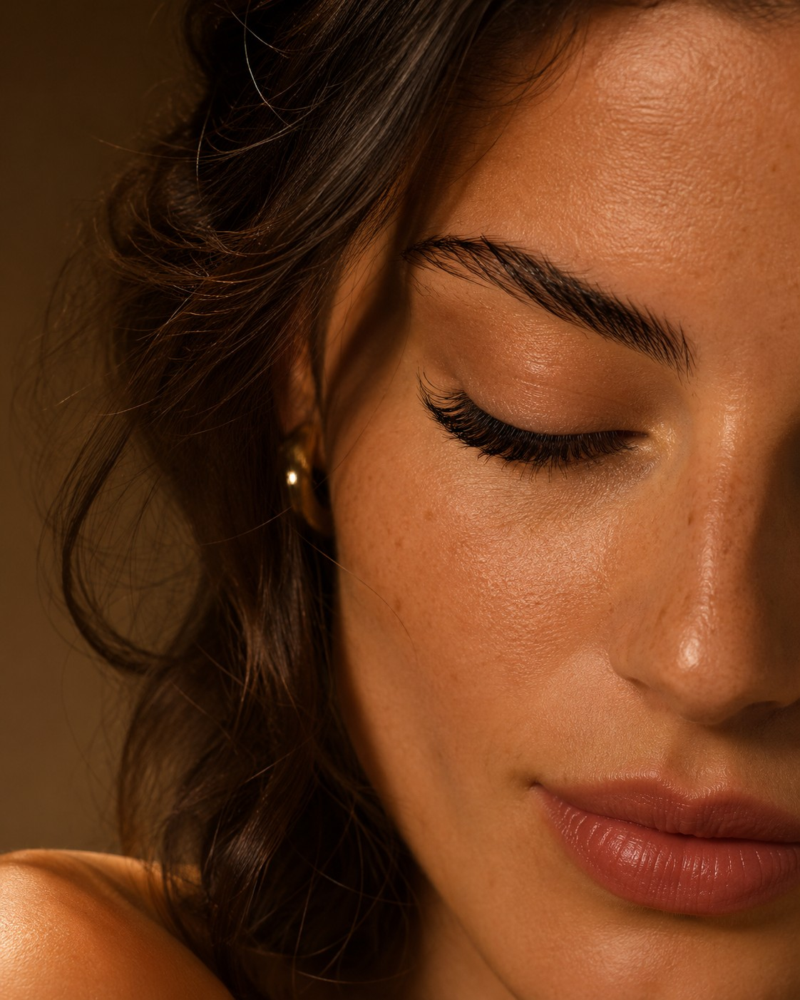
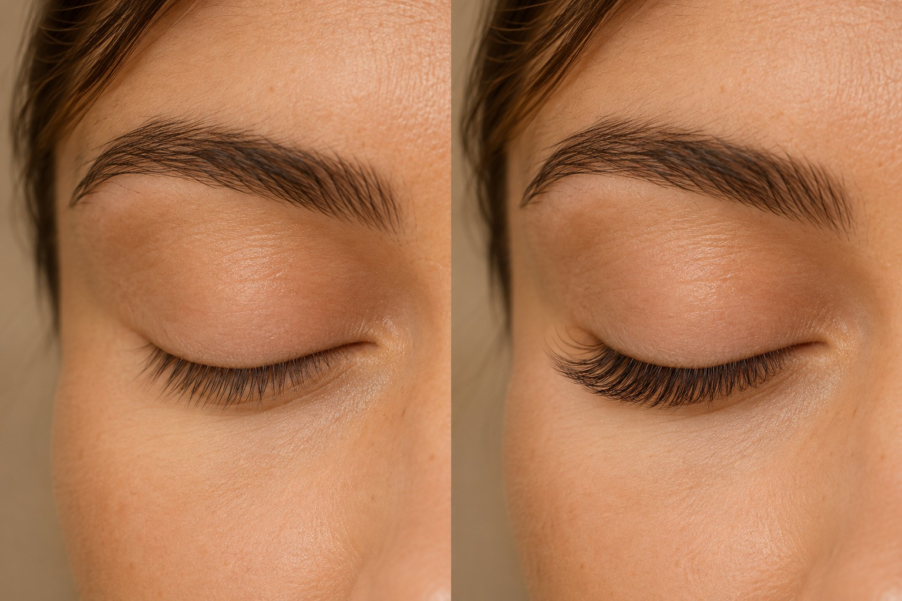
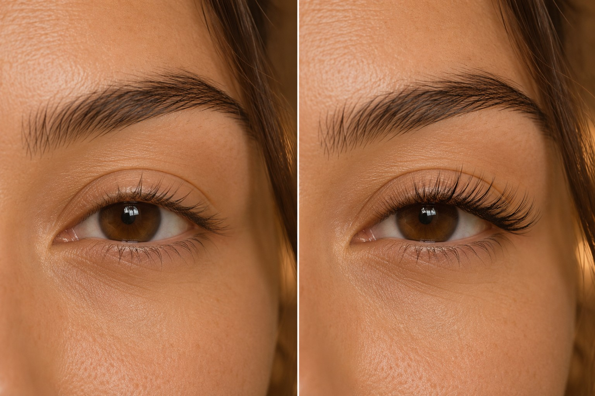
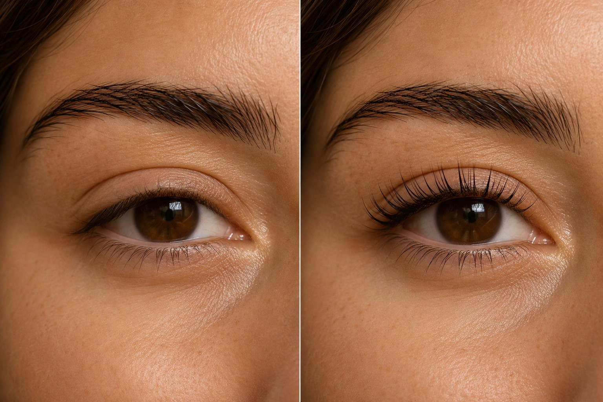

01
Extension ciglia
Uno sguardo intenso e armonioso, creato su misura per te.
Scopri di più →Il tuo sguardo, la mia arte
Extension ciglia e trattamenti estetici studiati per valorizzare la tua unicità, con cura e delicatezza.

Un momento tutto per te
Un piccolo studio dove professionalità, ascolto e passione si incontrano. Ti accolgo in un'atmosfera rilassante per creare un risultato che ti assomigli davvero.
La cura si vede
Ogni trattamento parte dall'ascolto: insieme troviamo lo stile più adatto a te.
Esempi illustrativi
Immagini illustrative create per il sito: non rappresentano lavori reali dello studio.



I miei servizi
Un gesto di cura, un risultato naturalmente elegante.
01
Uno sguardo intenso e armonioso, creato su misura per te.
Scopri di più →02
Un trattamento delicato per rimuovere i peli superflui e lasciare la pelle liscia e curata.
Scopri di più →03
Le tue ciglia naturali, più curve, nutrite e luminose.
Scopri di più →04
Un rituale purificante per una pelle fresca e radiosa.
Scopri di più →Una cura semplice, ogni giorno
Indicazioni generali: segui sempre le istruzioni ricevute dopo il trattamento.
Dopo il tempo di attesa indicato dalla lashmaker, puliscile delicatamente ogni giorno con un detergente specifico e senza oli. Risciacqua senza strofinare, tampona con delicatezza e pettina solo quando sono asciutte. Evita struccanti oleosi e mascara waterproof.
Le extension cadono insieme alle ciglia naturali nel loro normale ciclo. Per mantenere un risultato pieno, in genere si programma un refill ogni 2–3 settimane; durata e frequenza variano da persona a persona.
Se hai irritazione o infezione agli occhi o alle palpebre, una patologia oculare, una reazione allergica nota agli adesivi o un intervento oculare recente, rimanda e chiedi consiglio a un professionista sanitario. Avvisa sempre la lashmaker di allergie e sensibilità.
Attieniti alle indicazioni della professionista e dell'adesivo usato: il tempo di assestamento può variare. In seguito, lavarle con regolarità e delicatezza aiuta a mantenerle pulite.
Il risultato della laminazione tende a seguire il ciclo naturale delle ciglia e può durare diverse settimane. La durata varia in base alla ricrescita e alla cura; chiedi alla professionista le istruzioni specifiche per il prodotto utilizzato.
Non tirarle e non provare a sciogliere l'adesivo a casa: la rimozione va eseguita da una professionista con prodotti adatti, per proteggere le ciglia naturali e gli occhi.
Se hai pelle sensibile o allergie note, parlane prima dell'appuntamento. La professionista può valutare un test preliminare, che riduce il rischio ma non garantisce che non si verifichi una reazione.
“La bellezza non è perfezione.
È sentirsi bene nel proprio riflesso.”
Prenota il tuo momento
Scrivimi su Instagram per informazioni, disponibilità e appuntamenti.
◎ Visita il profilo Instagram →